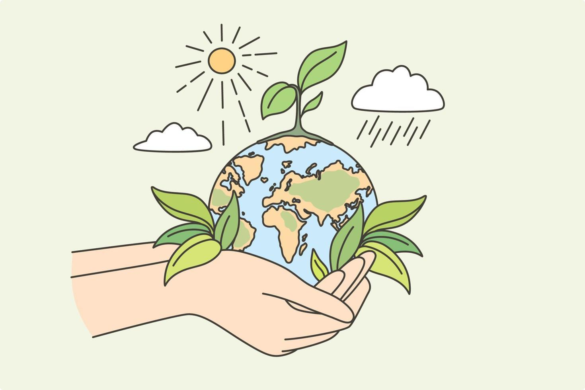

🌎 Futuro Sustentável: O Equilíbrio Começa Agora
Conscientizar é o primeiro passo para mudar. A produção e o meio ambiente podem (e devem) andar juntos.

🌱 Curiosidade do Dia
Clique no botão para descobrir algo novo!
📈 Produção x Impacto Ambiental
Gráfico mostrando a relação entre crescimento industrial e emissão de CO₂.

- 2000-2010: Aumento de 30% na produção.
- 2010-2020: Aumento de 15% com políticas verdes.
- Meta 2030: Reduzir emissões em 50%.
🌳 Pequenas Ações, Grandes Mudanças

- ♻️ Recicle e composte.
- 💡 Economize energia (troque lâmpadas).
- 🚲 Use transporte sustentável.
- 🛒 Prefira produtos locais e orgânicos.
💡 Tecnologias Verdes

Energia solar, carros elétricos e embalagens biodegradáveis são exemplos de como a inovação ajuda o planeta.
⚠️ Desafios Atuais

- Descarte incorreto de lixo.
- Desmatamento ilegal.
- Consumo excessivo de recursos.
🏭 Responsabilidade Corporativa

Empresas devem adotar práticas ESG (Ambiental, Social e Governança) para um futuro melhor.
🤝 Faça Parte
Inscreva-se no site para receber dicas semanais:
📰 Jornal Mundo Verde
Assine nosso jornal digital gratuito:

💬 Sua Opinião é Importante
Compartilhe sua ideia sobre sustentabilidade:
⭐ Avalie o Site
De 1 a 10, como você avalia nosso conteúdo?
😡 1
🙁 2
😐 3
🙂 4
😊 5
😋 6
😍 7
🤩 8
🥳 9
💚 10
🔊 Efeitos Sonoros
Clique nos botões para ouvir sons (que tal um passarinho ou água?).
Ouça e imagine um mundo mais verde!